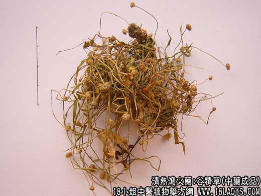
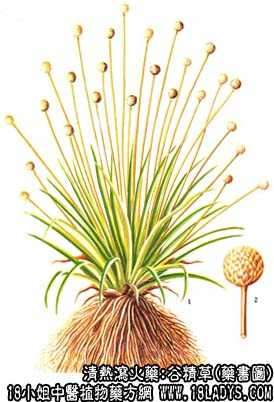

原文连接:https://www.daquan.com/post/2142.html



谷精草为常用中药。始载于《开宝本草》。
别名：戴星草、文星草、流星草、佛顶珠。
来源：为谷精科植物谷精草的带花茎的花序。均为野生，常生于水田或池塘旁。
产地：主产于江苏苏州、宜兴，浙江湖州、桐乡、海宁等地。
性状鉴别：谷精草为带花茎的头花序。花序呈扁圆形，直径4~5毫米，下连一细长莛，莛长约15~18厘米。黄绿色，有光泽。无节，上有扭曲的纵形线棱。质柔，不易折断。莛生一珠，灰白色，层层苞片排列较紧密，上附白色细粉。底部有鳞片状浅黄色的花蒂呈盘状，手捻即碎，可见多数黑色或灰绿色小粒（种子）。无臭，味淡，久嚼成团。
以身干，珠大而紧，色灰白，花莛短，黄绿色，无杂质者益。
功效与作用：谷精草水浸剂（1：6）在试管内对奥杜盎氏小芽胞癣菌、铁锈色小芽脆癣菌等无均有不同程度的抑制作用。1000%的水煎剂对绿脓杆菌作用，有效浓度1：320（试管法）。对肺炎球菌和大肠杆菌作用较弱。
炮制：拣净杂质，生用。
性味：甘、平。
归经：入肝、胃经。
功能：疏风清热，明目退翳。
主治：目翳、雀盲、头痛、齿痛、喉痹。
临床应用：谷精草体轻性浮，能上行阳明胃和足厥阴肝经。凡目中诸病，用之甚良。明目退翳之功，似在菊花之上。
用于风热目疾，肿痛羞明，翳膜遮晴，常与菊花、决明子、夏枯草等配伍，或与龙胆草、赤芍药配伍同用。
使用注意：血虚病者慎用：忌铁。
用量：9~12g，或入丸散。外用：烧存必研末敷。
处方举例：1、谷精草散（《圣济总录》）治闹风疼痛、谷精草（末）。铜绿（研）各3g。滑石粉1.5g。以上三味，调研匀，每用0.5g，吹入鼻内，或偏头痛随病左右吹鼻中。
2、治小儿肝热、手足掌心热：谷精草60~90g，猪肝60g，加开水炖1小时，日服二次。（《福建民间草药》）
3、治鼻衄，终日不止，心神烦闷（《圣惠方》）、谷精草细粉、以热面汤调服。
注：谷精草同属植物较多，各地用药不一。河南地区用的谷精草为石竹科植物鹅不食草的干燥带根全草，叶线形，黄绿色，茎细，长约10厘米，呈枯黄色，花小似谷子，膜质，生于茎枝上。由长方形细胞组成，花瓣连合，上端6裂，脉粒而明显，叶肉组织中有多数草酸簇晶，茎上有多数刺状毛茸。该品与正文不同，应注意鉴别。